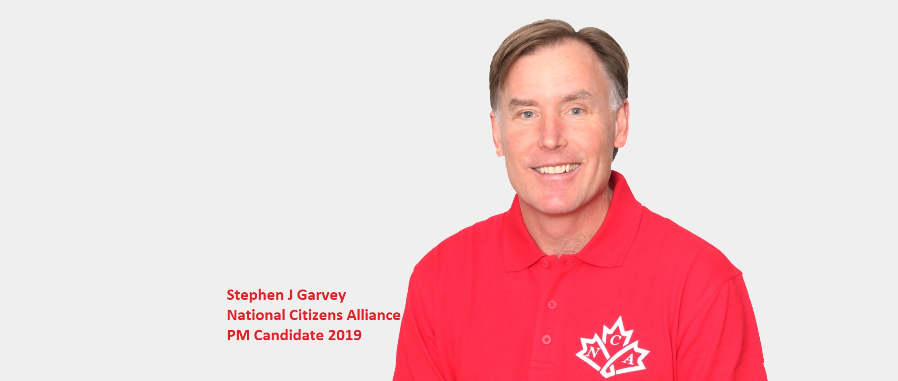

My Out of Body Experience in a National Citizens Alliance Meeting
May 1st, 2021
NOTE: Just like the Bernier/COVID protest, this story is from mid April, but I published this elsewhere.
Well, a little backstory.
In the Canadian election of 2019 I joined the NCA because I wanted to do something. I ran as a candidate, and failed to even get the 100 signatures required to be registered for the election. Honestly I didn't even bother knocking on 100 people's doors, because the party was terrible and weird, and the more I learnt about its founder, Steven Garvey, the more of a weirdo I realized he was. And you really get a sense for what is and isn't popular when you're bother people on a random weekend trying to get them to sign your pledge. However, I did in fact become a member, and apparently was never removed from any member list.
NCA Founder and Leader Stephen Garvey
Fast forwards to Thursday. I get an email from them, and for some reason decide not to ignore it. I get an invite to their jitsu (some technology) meeting, similar to a zoom call. There's only about 10 people in there, 3-5 of which don't have video cameras or microphones enabled. Anyway, so I figure, what could I lose by not getting up in here and seeing what's going on.
I was not prepared for them to start going on and on about 5G.
So they're talking about how they've faced censorship from Facebook, and I was actually surprised that a nationalist group was even allowed on facebook for this long. Turns out it's because they're this weirdo "muh Gates microchips vaccines 5G world UN conspiracy," group, that Zuckerberg and the ADL laugh at. But I didn't know that at the time, because I cared so little that I didn't even bother looking at their website again.
For the record, even back in 2019, when I got some weird vibes, they weren't doing this shit. Only other weird shit that you get sometimes from eccentric nationalists, or so I thought.
But the conversation is going as if they just assume that everyone in the chat is onboard with the 5G stuff, or even knows WTF it is. So I'm pretty vocal on other things at this point in the meeting, even though I didn't really know how crazy this guy was, but I pipe up with "so what's this thing about 5G again?"
The answer I got was, I shit you not, "5G is stealing the oxygen from people's blood and it wasn't tested."
 And my response was flat out. "That sounds retarded."
I actually said that, partly because I don't give a shit, I don't have anything invested in such a group, partly because I'd probably say that anyway, partly because my brain almost couldn't comprehend how someone could be so retarded. Anyway, there's a bit of a silence, but I was in a pretty good mood, because this was such a surreal experience, and the leader of the party, Stephen Garvey, starts going on about how it's totally not retarded. To which I basically respond with "no actually this is 100% retarded."
It's at this point that I must note that another guy in the chat, who shall be called J, who never revealed his face, but had his mic turned on, had earlier in the conversation done a sort of weird pleading with Garvey, "hey Stephen, I know 5G is really important, but it's already out, and mostly Canadians seem to like it." Garvey had responded with something about how "no, that's only some selected test areas such as UBC blah blah," but I got the sense that J was a normal person who was invested in the party and trying to steer it from the cliff of retardation. Later on I found out I was right.
Back to the main story. After this back and forth between me and Garvey, other cult members start chiming in with insane shit. One guy talked about how 5G in schools was a plot to damage the children to destroy the next generation so that THEY would more easily rule over them. Keep in mind, in Canada, we have child trannies just like the rest of the world, maybe worse than anyone else. When I brought this up, it was like I had just confirmed to them that 5G was real, because "see, it's all part of the conspiracy against the children." Like, if children are being harmed through tranny/mutilation, that means there's a plot to harm the children, therefore 5G is real. Brain explode.
And my response was flat out. "That sounds retarded."
I actually said that, partly because I don't give a shit, I don't have anything invested in such a group, partly because I'd probably say that anyway, partly because my brain almost couldn't comprehend how someone could be so retarded. Anyway, there's a bit of a silence, but I was in a pretty good mood, because this was such a surreal experience, and the leader of the party, Stephen Garvey, starts going on about how it's totally not retarded. To which I basically respond with "no actually this is 100% retarded."
It's at this point that I must note that another guy in the chat, who shall be called J, who never revealed his face, but had his mic turned on, had earlier in the conversation done a sort of weird pleading with Garvey, "hey Stephen, I know 5G is really important, but it's already out, and mostly Canadians seem to like it." Garvey had responded with something about how "no, that's only some selected test areas such as UBC blah blah," but I got the sense that J was a normal person who was invested in the party and trying to steer it from the cliff of retardation. Later on I found out I was right.
Back to the main story. After this back and forth between me and Garvey, other cult members start chiming in with insane shit. One guy talked about how 5G in schools was a plot to damage the children to destroy the next generation so that THEY would more easily rule over them. Keep in mind, in Canada, we have child trannies just like the rest of the world, maybe worse than anyone else. When I brought this up, it was like I had just confirmed to them that 5G was real, because "see, it's all part of the conspiracy against the children." Like, if children are being harmed through tranny/mutilation, that means there's a plot to harm the children, therefore 5G is real. Brain explode.
"If they're abusing children for perverted reasons, then they must be abusing children through 5G"
But actually in the moment I was really enjoying this, so I basically bullied everyone else in the chat and just flat out talked over them whenever I felt like. I particularly lectured them on how not only is "muh 5G" retarded, it's doubly retarded when you could actually run on the 20+ issues that are massively popular that people already like. At this point, one of the goys there just flat out asked me what I thought we should run on, so I started off with a list of about five things. No anti-White racial discrimination/hate speech, no ADL driven censorship by multi national trillion dollar tech conglomerates, no child trannies, and so on. And no, they had no idea who the ADL was. Goes to show you the quality of people who are conspiracytards.
*NOTE: Then again, I think these people know more than they let on. After all, how come they literally never believe any conspiracies that are actually true? Because those are the ones that get you banned from FB/Twitter/YouTube/Etcetera.
For the record, I actually started recording halfway into my explanation for what we should run on, but I don't think I'm going to release the video. These people are retards, not feds, and I can respect their privacy.
Also for the record, J loudly agreed with me when I brought up anti-White racial discrimination.
Anyway, laughably, despite this being a federal political party with a rumoured election going to be called in October, they were still at the policy stage. Well, aside from "5G something something stealing blood oxygen," they had that down pat. I had the audience captivated, and everyone in there was nodding their heads in agreement. I mean, this is both good and bad. Good because it shows I can win over the crowd, bad because LOL how incompetent is this party? But then Garvey kept looping back to attempt to tie this back to 5G and started whining about being attacked as "racists."
This is a guy whose website has a banner, now changed, that had bill gates, vaccines, 5G conspiracy shit, and other garbage. And he's really worried about being attacked by the hated CBC for defending White People. Then he starts going on and on about how he's "here for ALL Canadians, I'm not gonna single out one race of people. There's discrimination against Asians, Whites, Blacks, everyone."
To which I reiterated that this was retarded. Specifically, I would say things like "everybody knows that White People are the victims of racial discrimination. Coca Cola doesn't put out 'try to be less Asian' training. I've never heard of 'Black Privilege' training." Etcetera.
At this point, he said the most hilarious thing yet. He brought up how he used to be really against Muslim Extremism, but this was a mistake because it allowed the CBC to attack him as Islamophobic. So instead he should have "made it about all extremism. You know, Catholic Extremism, Sikhs, Hindu Extremism, not just Muslim Extremism."
To which I outright responded, "yes, but if you go to people and ask them if they are worried about Hindu Extremism they're going to look at you like you're retarded."
Anyway, basically the entire call could be summed up as: I called the leader of a tiny (~1500 members) federal political party in Canada a retard, sometimes directly, sometimes indirectly, for 2+ hours, in front of a crowd of 10 cult members online.
I had a great time. I will truly remember this experience for the rest of my life.
But more importantly, I connected with J afterwards, the guy who seemed normal. Turns out he was normal, and he let me in on a few important things. First, the party infrastructure is an absolute LOLcow. Incompetence for days. Second, he was getting his campaign started in a heavily rural area. I don't want to go too in depth with that, that's another post. Thirdly, about half the members are also normal, which is the only value the party has.
The takeaway there, and which was doubled down in me when I went to a Maxime Bernier PPC rally today, is that there are plenty of normal people desperate for actual representation, but then they go to these weirdo parties and figure out that they're weirdos. Again, more on that later.
And my response was flat out. "That sounds retarded."
I actually said that, partly because I don't give a shit, I don't have anything invested in such a group, partly because I'd probably say that anyway, partly because my brain almost couldn't comprehend how someone could be so retarded. Anyway, there's a bit of a silence, but I was in a pretty good mood, because this was such a surreal experience, and the leader of the party, Stephen Garvey, starts going on about how it's totally not retarded. To which I basically respond with "no actually this is 100% retarded."
It's at this point that I must note that another guy in the chat, who shall be called J, who never revealed his face, but had his mic turned on, had earlier in the conversation done a sort of weird pleading with Garvey, "hey Stephen, I know 5G is really important, but it's already out, and mostly Canadians seem to like it." Garvey had responded with something about how "no, that's only some selected test areas such as UBC blah blah," but I got the sense that J was a normal person who was invested in the party and trying to steer it from the cliff of retardation. Later on I found out I was right.
Back to the main story. After this back and forth between me and Garvey, other cult members start chiming in with insane shit. One guy talked about how 5G in schools was a plot to damage the children to destroy the next generation so that THEY would more easily rule over them. Keep in mind, in Canada, we have child trannies just like the rest of the world, maybe worse than anyone else. When I brought this up, it was like I had just confirmed to them that 5G was real, because "see, it's all part of the conspiracy against the children." Like, if children are being harmed through tranny/mutilation, that means there's a plot to harm the children, therefore 5G is real. Brain explode.